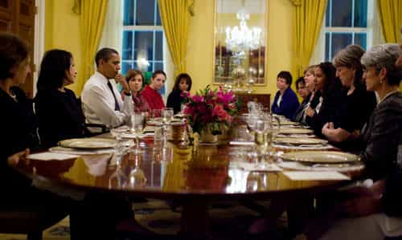

Amasa enjoys art, music, and traveling. Some day he hopes to make it to Romania and settle down.


One Sunday, the bishop at my church remarked that too many women were standing around chatting after the meeting. He said they needed to proceed quickly to their Sunday school classes.
Disapproving female whispers erupted from the congregation. Then, one of the prominent women in the church barked loudly, “I’m sorry…” and stormed out of the chapel. The bishop did not apologize or back down. He calmly ordered members of the church to behave like adults, and explained that church should be a spiritual learning environment, not social hour.
The next week, I was surprised to see the angry woman sitting quietly. After the service, the congregation proceeded reverently to their classes. This experience as a boy taught me a powerful lesson how men should lead in a church. I learned that if the men take charge, the women follow.
Religions today have become sanitized and weak. Shamed by our cultural overmasters, religions seek “tolerance” and “acceptance.” This destroys a productive spiritual environment, and we yearn for strong leaders to speak boldly the hard truths.
The loss of our holy spaces leads men to flee the church, and this is tragic. Spirituality fulfills men as they act with righteous dominion. It is possible to expel the poisonous social justice ideology from religion, and it can be done by restoring patriarchal leadership. The world desperately needs this, for without religion we spiral into pride, apathy, and confusion.
Many churches are falling prey to the poison of “gender equality.”
Writer Kelly Bishop recently listed several ways for churches to practice “egalitarian theology.” She suggests that the church “assign passages about women in the Bible to men” to talk about. She says sermons can be given to “both men and women” for editing before being delivered. She also says pastors should “teach gender reconciliation from the pulpit.”
If she had her way, would church become a Women’s Studies course?
Priesthood is not a feel-good counsel or public-relations office, Kelly. It is a man’s direct connection to God, with authority to act and speak the words of God, and this is not something that is achieved through political correctness exercises.
Feminists love to preach their non-scriptural philosophies to the masses, so it is no surprise that they strive to occupy the church pulpit. They love the glory and image of superiority. You hear the same sermons in newspapers, television media, classrooms, and social media.
In the 5th century, a female priestess accidentally burned down the temple of Hera at Argos. “Oopsie!” (Thucydides 2:2.1)
In Bali, female priestesses would dope up slaves on opium, and then coax them into jumping into a fire, where they burned to death. At Pythia, they breathed toxic fumes and spoke gibberish, which was “translated” in prophesies.
Over at the LDS church, a feminist named Kate Kelly pressured the church to ordain women into priesthood leadership. When it looked like she wouldn’t get her way, she lashed out at fellow church members for having standards of obedience:
Sadly, the Mormon faith has become a place that incentivizes the survival of the least fit. Since strict obedience is demanded and harshly enforced, only the least talented, least articulate, least nuanced thinkers, least likely to take a stand against abuse, and the least courageous people thrive in the Church today.”
Does it strengthen religion if people are not expected to follow a set ofles? Is that what feminism is about? What is the point of religion if it does not require adherence to a moral code?
I was struck by how similar Kate sounded to anti-Christian Roman Celsus. In the 2nd century, Census said Christians “are able to convince only the foolish, dishonorable and stupid” to follow their doctrine.
He said: “Let no one educated, no one wise, no one sensible draw near. For these abilities are thought by us to be evils. But as for anyone ignorant, anyone stupid, anyone uneducated, anyone who is a child, let him come boldly.”
The LDS church wisely excommunicated Kate Kelly for apostasy. But leftists continue to attack anyone who separates themselves from profane worldly philosophies, such as gender equality.
Many women and weak-minded men give in to the shame. We need men to weather these attacks, publicly expose the apostates, and boldly declare the rigid standards for obedience.
Martin Luther opened up the possibility of female ordination with a poorly-worded definition of priesthood which made women equal to men.
“Every Christian man is a priest, and every Christian woman a priestess… All Christians are, properly speaking, members of the ecclesiastical order, and there is no difference between them except that they hold different offices.”
The left’s obsession with “equality” is tearing churches apart. What is the point of religion if we are all equal no matter what we do?
This is the most acidic element of Social Justice ideology. Is the woman who confesses adultery every week to her female priest on the same level as an ancient prophet? If our actions have no bearing on our salvation, why not permit any kind of aberration?
No, you cannot wave your hands in the air and declare yourself “saved.” It is our job as men to figure out how to access redemption and atonement, through justice and mercy. We need to get to the core falsehoods behind the Social Justice ideology and understand how it opposes true doctrine.
We also need to depart from Dante’s version of hell, with grinning goblins and “bad boy” devils, and look critically at what organized evil really is. How does the devil oppose truth? Isn’t universal salvation a demonic doctrine?
Absolutely it is. Religion should improve people’s behavior, not make excuses for their refusals to change. The devil is the omega who attacks men who have a higher IQ for their “white male privilege.” The devil is the androgynous feminist who blames men for the misery in her life. Constantly, the devil is pulling down the strong and excellent, and demanding conformance to the perverted and weak.
This is why the devil told Eve that she would be equal to God if she ate the forbidden fruit. All it would take was a bite of an apple and exaltation would be achieved–no work or merit needed! No need for Adam either! But of course, justice turned out to be very different. She would be plunged into a dark and lonely world, where she toiled for her achievement and gained joy through marriage with Adam, who would be her priesthood authority.

“Childish leaders oppress my people, and women rule over them. O my people, your leaders mislead you; they send you down the wrong road.” (Isaiah 3:12)
America was once a land where the state separated itself from the church. This used to allow men to pursue the dictates of their conscience. But lately, un-elected leaders of the government took it upon themselves to redefine marriage–a religious institution.
The government is further being used to punish religions that do not include gays. Just the other day, President Obama published a “shame list” of Christian colleges that exclude transgenders from their staff.
It is important to realize that this is not a case of secularism versus religion. This is not government versus faith. Rather, this is a case of one religion oppressing another, with government as a weapon. The government is being used by the abominable religion of social justice to stamp out opposition.
Feminism is a church, a very intolerant church, and it dismantles the separation of church and state that should exist. They are no different, really, than the witches of old who worked dark magic.
You may think there is multitude of churches claiming to be true, and the alternative choice of a secular lifestyle. But really, there are two ways only, the right way and wrong way. Regardless of how you feel about religion, you are on one of those roads.
The time for a pacific attitude is over. Through research, pondering and personal prayer, we have what it takes to discern the devil’s destructive elements in our society and to walk the good path.
It was prophesied that childish leaders would place women in positions of authority over people. You must not give any concessions to them. Do not budge an inch. Because the moment you do, that gives them room to inject their poison and their inquisitions grow more severe.
This is a scary prospect when you have the government being used against you. The incessant propaganda in the media makes you think everyone is against you. But you must not apologize for being right.
If it becomes overwhelming, do not run away from spirituality completely, because the devil points his guns in the areas that are most vital for our growth and happiness. Look inside yourself.
The first thing to do is to stop the ordination of women in the churches. Commodus in Antioch appointed female priestesses if they were able to recite hymns or if they won a wrestling match. Today, all a woman needs to gain moral authority is a liberal arts degree. But they do not bring us closer to truth.
The second thing is to enforce good behavior through obedience to scripture. Yes, we can gain atonement for our mistakes, but that does not mean ignoring divine justice. It means a firm grasp of scriptural doctrine.
Finally, carefully consider the spiritual blessings and responsibilities that come with being a man. It is not your place as a man to submit to a church public-relations board or diversity officer. God is a Father in Heaven, and we grow closer to Him as men by emulating the great compassion, justice, and holiness that we see in His grand creations.
The church begins with this personal relationship, and then it grows as the enlightened and chosen lift up the humble and faithful.
Read More: UCKG Church Affiliate Tells Women “Blue-Ball English Men Until They Marry You”